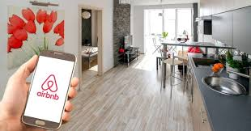

AIRBNB
AIRBNB

Quartos com maior conforto
- Airbnb foi fundado em Agosto de 2008 por Brian Chesky, Joe Gebbia e Nathan
Blecharczyk em São Francisco, na Califórnia. O financiamento inicial foi obtido
a partir da incubadora Y Combinator. Mais tarde Greylock Partners, Sequoia
Capital e Ashton Kutcher também investiram na empresa.[2]
- No mundo, centenas de cidades possuem restrições para locações de
curto prazo.[3] Na Europa, cidades como Barcelona,[4] Amsterdã,[5] Paris
e Veneza,[6] impuseram restrições à plataforma nesse sentido. Em Paris, por
exemplo, os anfitriões não podem alugar seus imóveis por mais de 120 dias
por ano e estes devem estar regulares perante a prefeitura e adimplentes
com os tributos.[7][8]
No mundo, centenas de cidades possuem restrições para locações de curto prazo.[3]
Na Europa, cidades como Barcelona,[4] Amsterdã,[5] Paris e Veneza,[6] impuseram
restrições à plataforma nesse sentido. Em Paris, por exemplo, os anfitriões não podem
alugar seus imóveis por mais de 120 dias por ano e estes devem estar regulares perante
a prefeitura e adimplentes com os tributos.[7][8]>